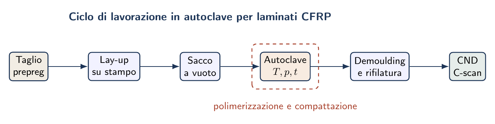
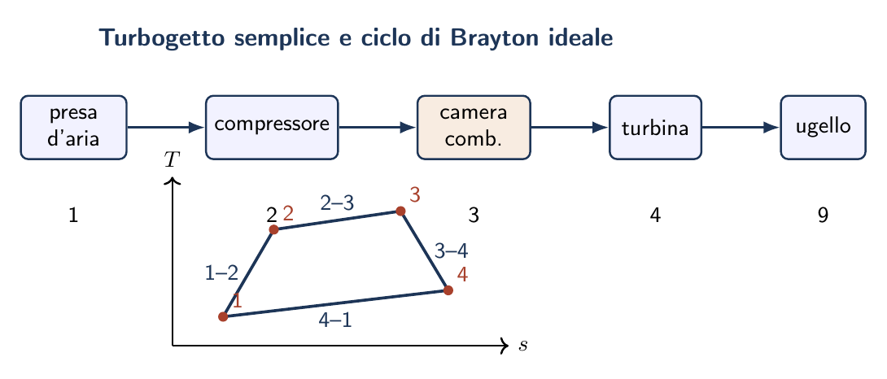

Esame di Stato 2023 — sessione straordinaria
Compositi · Motore a reazione · Decollo · Certificazione aeromobili
La prova della sessione straordinaria 2023 affronta quattro argomenti che spaziano dalla tecnologia dei materiali alla propulsione, dalla meccanica del volo alla normativa di certificazione: il ciclo di lavorazione delle strutture in composito, il funzionamento del motore a reazione, le fasi della manovra di decollo e il quadro normativo per la certificazione degli aeromobili.
Ciclo di lavorazione delle strutture in materiale composito
Costituenti del composito aeronautico
Fibre.
Le fibre sono il costituente portante: resistono alle tensioni longitudinali e conferiscono rigidezza. In campo aeronautico si impiegano principalmente:- Fibre di carbonio (CFRP): elevato modulo di Young ($E \approx 70$–$300\,\mathrm{GPa}$ secondo la tipologia), bassa densità ($\rho \approx 1{,}8\,\mathrm{g/cm}^3$), ottima resistenza a fatica. Costo elevato.
- Fibre di vetro (GFRP): buon rapporto prestazioni/costo, impiego prevalente su strutture secondarie (carenature, cofani, antenne radiotrasparenti).
- Fibre aramidiche / Kevlar (AFRP): altissima tenacità, usate nei pannelli antiproiettile e nelle strutture soggette a impatti.
Matrice.
La matrice (resina epossidica, bismaleimide per alte temperature) trasferisce i carichi tra le fibre, protegge le fibre da agenti ambientali e conferisce forma al pezzo. Determina le proprietà interaminari (interlayer shear strength, ILSS).Metodi di produzione
1.\ Polimerizzazione in autoclave (laminato solido — metodo premium).
È il processo di riferimento per le strutture primarie aeronautiche. Si articola nelle seguenti fasi:- Preparazione del preimpregnato (prepreg): le fibre vengono impregnate con resina parzialmente polimerizzata (stadio B) in condizioni controllate di temperatura e contenuto di resina. Il prepreg viene conservato in celle frigorifere ($-18\,{}^{\circ}\mathrm{C}$) per mantenere la viscosità della resina bassa e la vita utile dell'ordine di 6–12 mesi.
- Lay-up (laminazione): gli strati di prepreg sono depositati manualmente o con macchine ATL/AFP (Automated Tape Laying / Automated Fibre Placement) su uno stampo di laminazione, rispettando sequenza di impilamento e angoli di orientamento delle fibre ($0{}^{\circ}/\pm45{}^{\circ}/90{}^{\circ}$ tipicamente).
- Sacco a vuoto: il laminato crudo è coperto con un film di nylon impermeabile (sacco a vuoto), sigillato sui bordi e collegato a una pompa da vuoto. La pressione atmosferica comprime il laminato e rimuove l'aria intrappolata tra gli strati.
- Cura in autoclave: l'autoclave applica simultaneamente pressione ($0{,}3$–$0{,}7\,\mathrm{MPa}$) e temperatura (tipicamente $120$–$180\,{}^{\circ}\mathrm{C}$ per le resine epossidiche) seguendo un ciclo di cura programmato. La pressione comprime ulteriormente il laminato (riduzione della porosità a $< 1\%$); il calore provoca la reticolazione completa della resina.
- Sformatura e rifinitura: dopo il raffreddamento controllato, il pezzo viene estratto dallo stampo; i bordi sono rifilati a dimensione con utensili diamantati.
- Controllo qualità (CND): ultrasuoni (C-scan), raggi X, termografia attiva per rilevare delaminazioni, inclusioni di vuoti o porosità eccessive.

2.\ Polimerizzazione in forno (fuori autoclave, OoA).
Adatta a strutture secondarie a bassa criticità strutturale. La pressione di compattazione è fornita solo dal vuoto del sacco ($\approx 0{,}1\,\mathrm{MPa}$); la cura avviene in forno a pressione atmosferica. Più economica, ma con porosità interna maggiore ($1$–$4\%$) e proprietà interaminari inferiori all'autoclave.3.\ Filament Winding (avvolgimento di filamenti).
Una macchina avvolgitrice posiziona la fibra impregnata di resina su un mandrino rotante, realizzando strutture di rivoluzione (serbatoi in pressione, alberi di trasmissione, radome supersonici, pale di elicottero). La polimerizzazione avviene durante l'avvolgimento per riscaldamento del mandrino. Ottimale quando le tensioni principali sono di tipo circonferenziale.4.\ RTM (Resin Transfer Moulding).
Le fibre asciutte (preforma) sono inserite in uno stampo chiuso; la resina liquida viene iniettata sotto pressione impregnando la preforma. Ciclo economico, buona finitura su entrambe le superfici; impiegato per geometrie complesse (centine, rib, componenti fusoliera).| Processo | Porosità | Costo | Applicazione tipica | Volume prod. |
| Autoclave | $< 1\%$ | Elevato | Strutture primarie (ala, fusoliera) | Basso |
| Forno (OoA) | $1$–$4\%$ | Medio | Strutture secondarie, pannelli | Medio |
| Filament Winding | $< 2\%$ | Medio | Serbatoi, alberi, radome | Medio |
| RTM | $< 2\%$ | Basso–Medio | Componenti complessi in serie | Alto |
Funzionamento del motore a reazione
Il turbogetto semplice
Il turbogetto è il motore a reazione più elementare. È composto da cinque elementi principali:
- Presa d'aria (intake):
- incamera e decelera l'aria in ingresso, convertendo parte dell'energia cinetica in pressione statica (ramjet effect). Nei motori subsonici ha forma convergente-divergente; nei supersonici è dotata di rampa o cono variabile per gestire l'onda d'urto.
- Compressore:
- eleva la pressione dell'aria di un fattore $\beta_c = p_2/p_1$ (rapporto di compressione, tipicamente $\beta_c = 15$–$40$ per i turbofan moderni) assorbendo lavoro meccanico dall'asse. Può essere assiale (più stadi, alto rapporto di compressione) o centrifugo (monostadio, compatto).
- Camera di combustione:
- il combustibile (cherosene Jet-A/Avtur) viene iniettato e bruciato a pressione (quasi) costante. La temperatura dei gas raggiunge $1400$–$1700\,\mathrm{K}$ (TET, Turbine Entry Temperature); è il parametro termico più critico per il rendimento e la vita dei componenti.
- Turbina:
- espande parzialmente i gas combusti convertendo entalpia in lavoro meccanico sull'asse. Il lavoro estratto dalla turbina è esattamente quello assorbito dal compressore (più le perdite meccaniche): $L_T = L_C + L_{\mathrm{accessori}}$. La turbina opera nelle condizioni termodinamiche più severe ($T > 1000\,\mathrm{K}$, $n > 10\,000\,\mathrm{rpm}$) e richiede materiali speciali (superleghe Ni-base, pale cave con raffreddamento interno).
- Ugello:
- i gas all'uscita della turbina hanno ancora pressione superiore a quella ambiente; il condotto convergente (o convergente-divergente nel supersonico) converte questa entalpia residua in energia cinetica, accelerando il getto alla velocità $u_e$ che genera la spinta per reazione.
Il turbofan e il rapporto di diluizione
Nel turbofan una seconda turbina a valle del compressore di alta pressione aziona una ventola anteriore (fan) di grande diametro, che comprime una seconda portata d'aria "fredda" (bypass flow). Il rapporto di diluizione (BPR, Bypass Ratio) è il rapporto tra portata di bypass e portata primaria: $$\mathrm{BPR} = \frac{\dot{m}_{\mathrm{bypass}}}{\dot{m}_{\mathrm{primario}}}$$ I turbofan civili moderni hanno BPR $= 5$–$15$; i motori ad alta diluizione (UHBR, Ultra-High Bypass Ratio) raggiungono BPR $> 12$.
Perché il turbofan è più efficiente del turbogetto.
Dalla (eq:spinta_reazione), a parità di spinta si può accelerare molta aria di poco oppure poca aria di molto. Il rendimento propulsivo vale: $$\eta_p = \frac{2 V_0}{u_e + V_0}$$ Esso è massimo quando $u_e \rightarrow V_0$ (getto lento, molta portata). Il fan del turbofan diluisce il getto caldo con aria fredda più lenta, avvicinando $u_e$ a $V_0$ e aumentando $\eta_p$. In aggiunta, riduce drasticamente la rumorosità (l'intensità del rumore è proporzionale a $u_e^8$).
Famiglie di motori a reazione
- Turboelica:
- la quasi totalità del lavoro utile della turbina viene inviata all'elica (tramite riduttore); una piccola aliquota viene ancora espansa nell'ugello. Rendimento propulsivo molto elevato ($\eta_p \approx 80$–$87\%$) ma limitato a $M < 0{,}7$.
- Turbogetto con postcombustore:
- una seconda iniezione di combustibile a valle della turbina (nel postcombustore o afterburner) eleva ulteriormente la temperatura del getto, aumentando la spinta del 50–70%. Usato esclusivamente per le prestazioni massime in aviazione militare, a causa dell'elevatissimo consumo.
- Turbofan ad alto BPR:
- la configurazione dominante per l'aviazione commerciale. Consumi ridotti del 15–20% rispetto al turbogetto; rumorosità notevolmente inferiore.
Fasi della manovra di decollo
Velocità caratteristiche del decollo
Prima di descrivere le fasi è necessario richiamare le velocità convenzionali:
- $V_1$ — velocità di decisione:
- massima velocità entro cui il decollo può essere abortito con certezza di arresto sulla pista disponibile. Se il guasto motore si manifesta a $V < V_1$ il pilota frena; se a $V > V_1$ prosegue il decollo.
- $V_R$ — velocità di rotazione:
- il pilota comanda la cabrata per portare il muso in assetto di decollo ($\alpha$ aumenta, il carrello anteriore si solleva). Tipicamente $V_R = 1{,}05 V_{\mathrm{MU}}$ (minimum unstick speed).
- $V_{\mathrm{LOF}}$ — lift-off speed:
- velocità alla quale tutte le ruote si staccano dalla pista. Posta convenzionalmente a $V_{\mathrm{LOF}} = 1{,}10\,V_s$ ($V_s$ = velocità di stallo con ipersostentatori estesi); garantisce un margine di portanza $L > W$.
- $V_2$ — velocità di sicurezza al decollo:
- velocità minima che il velivolo deve raggiungere alla quota di $35\,\mathrm{ft}$ (10{,}7 m) anche con un motore non operativo (OEI). Posta a $V_2 \ge 1{,}2\,V_s$.
Fasi della manovra
Fase 1 — Rullaggio (Ground Roll).
Il pilota porta i motori al massimo regime (TO thrust), rilascia i freni e il velivolo inizia ad accelerare sulla pista. Il carrello è esteso; il tren di atterraggio porta il peso intero. Le forze orizzontali sono: spinta $T$ (motore), resistenza aerodinamica $R$, attrito di rotolamento $\mu(W - L)$ (che decresce man mano che la portanza si sviluppa), forza d'inerzia $F_i = ma$: $$T - R - \mu(W - L) = m\,a$$ L'accelerazione media è dell'ordine di $1{,}5$–$3\,\mathrm{m/s}^2$; la distanza di rullaggio è proporzionale a $V_{\mathrm{LOF}}^2$.Fase 2 — Rotazione (Rotation).
All'atingimento di $V_R$, il pilota effettua la cabrata a velocità angolare di pitching $\dot\theta \approx 3{}^{\circ}/\mathrm{s}$. Il carrello anteriore si solleva; il velivolo ruota attorno all'asse di rollio del carrello principale. La coppia cabrante è impressa dagli elevatori. Questa fase dura tipicamente $2$–$3\,\mathrm{s}$; lo spazio percorso vale $x_{\mathrm{rot}} \approx V_R \cdot t_{\mathrm{rot}}$.Fase 3 — Stacco (Lift-off).
Alla velocità $V_{\mathrm{LOF}}$ la portanza supera il peso e tutto il carrello si stacca dalla pista. Da questo momento il velivolo è in volo libero; la fase di terra è conclusa. L'assetto di decollo è dell'ordine di $\alpha \approx 8$–$12{}^{\circ}$.Fase 4 — Involo (Airborne).
Il velivolo sale in assetto di decollo fino a raggiungere la quota convenzionale di $35\,\mathrm{ft} = 10{,}7\,\mathrm{m}$ (CS-25) o $50\,\mathrm{ft} = 15\,\mathrm{m}$ (CS-23). In questa fase la velocità passa da $V_{\mathrm{LOF}}$ a $V_2$; il pilota mantiene l'assetto di decollo e il carrello viene ritratto (appena si ha accelerazione positiva). Il tasso di salita è dettato dal supero di spinta: $$\frac{dh}{dt} = \frac{T - D}{W}\,V$$Distanza totale di decollo.
La distanza totale (BFL — Balanced Field Length) è la somma delle distanze parziali: $$x_{\mathrm{TOD}} = x_{\mathrm{roll}} + x_{\mathrm{rot}} + x_{\mathrm{airborne}}$$ Per CS-25 la distanza di decollo dichiarata deve includere un margine del 15% sulla distanza determinata in prove di volo (factored takeoff distance).Decollo con motore non operativo (OEI).
Se un motore si guasta prima di $V_1$, il pilota deve poter frenare e fermarsi entro la pista (Accelerate-Stop Distance). Se il guasto avviene a $V \ge V_1$, il decollo prosegue con spinta asimmetrica: il pilota deve compensare il momento di imbardata con il timone di direzione e garantire $V_2$ alla quota di $35\,\mathrm{ft}$. Il punto di intersezione tra distanza di frenata e distanza di decollo OEI definisce proprio $V_1$ e la distanza di campo bilanciata.Norme di riferimento e requisiti per la certificazione degli aeromobili
Il sistema normativo internazionale
ICAO e gli Annex.
L'ICAO (International Civil Aviation Organization), agenzia ONU con sede a Montréal, pubblica i 19 Annex alla Convenzione di Chicago (1944). L'Annex 8 (Airworthiness of Aircraft) definisce gli standard minimi di aeronavigabilità che ogni stato membro deve incorporare nella propria legislazione. Gli Annex non sono direttamente applicabili dai costruttori: forniscono i requisiti di alto livello che le autorità nazionali traducono in regolamenti tecnici.EASA e le Certification Specifications.
In Europa, l'EASA (European Union Aviation Safety Agency), con sede a Colonia, emette le Certification Specifications (CS): regolamenti tecnici dettagliati che traduco gli standard ICAO in requisiti direttamente verificabili. Le principali CS per gli aeroplani sono:- CS-23: aeroplani in categoria Normal/Utility/Acrobatic/Commuter con MTOW $\le 8618\,\mathrm{kg}$ e $\le 19$ passeggeri (dal 2017, Amendment 5, tutte le categorie $< 8618\,\mathrm{kg}$ rientrano in una unica categoria "Normal").
- CS-25: grandi aeroplani (MTOW $> 8618\,\mathrm{kg}$, tipicamente i velivoli di linea). È il codice di aeronavigabilità più articolato e rigoroso.
- CS-22: alianti e motoalianti; CS-27/29: aerogiri; CS-VLA: aeroplani molto leggeri; CS-LSA: velivoli da diporto sportivo.
FAA e i FAR.
Negli USA la FAA (Federal Aviation Administration) emette i FAR (Federal Aviation Regulations), contenuti nel Titolo 14 del CFR (Code of Federal Regulations). Le equivalenze principali sono: FAR 23 \(ongleftrightarrow\) CS-23; FAR 25 \(ongleftrightarrow\) CS-25. EASA e FAA hanno sottoscritto un accordo bilaterale di validazione reciproca dei certificati (BASA): un TC EASA è normalmente accettato dalla FAA (con eventuali condizioni aggiuntive) e viceversa.ENAC.
In Italia, l'ENAC (Ente Nazionale per l'Aviazione Civile) è l'autorità competente per la registrazione degli aeromobili e il rilascio dei certificati di navigabilità individuali. Agisce come autorità delegata di EASA per le attività amministrative di certificazione sul territorio nazionale.Il processo di certificazione
Il processo di certificazione si articola in tre fasi principali:
Fase 1 — Certificazione di tipo (Type Certificate, TC).
Il costruttore dimostra ad EASA che il progetto dell'aeromobile soddisfa la CS applicabile. La procedura prevede:- Application: il costruttore presenta domanda di TC, definisce la certification basis (la versione della CS applicabile).
- Compliance demonstration: per ogni paragrafo della CS il costruttore dimostra la conformità con analisi, calcoli, prove di laboratorio e prove di volo.
- First flight approval: EASA autorizza il primo volo del prototipo dopo aver verificato la conformità della costruzione al progetto.
- Type Inspection: i Flight Test Engineers di EASA conducono prove di volo di accettazione. Verificano in particolare: caratteristiche di stallo, controllo con OEI, prestazioni di decollo e atterraggio, comportamento in condizioni meteorologiche avverse.
- Release del TC: emissione del certificato di tipo con la Type Certificate Data Sheet (TCDS) che riporta tutte le limitazioni e configurazioni approvate.
Fase 2 — Produzione (Production Organisation Approval, POA).
Il costruttore deve dimostrare di avere un sistema di controllo qualità in grado di replicare il progetto certificato. EASA rilascia la POA (Part 21G) che autorizza la produzione in serie.Fase 3 — Certificato di Navigabilità individuale (C of A).
Ogni singolo esemplare prodotto riceve un Certificate of Airworthiness individuale che attesta la conformità alla configurazione certificata. Il C of A va rinnovato periodicamente (Part-M).Principali requisiti tecnici della CS-25
Le CS-25 coprono le seguenti aree (richiamando i paragrafi più rilevanti):
- Prestazioni (CS-25.100–117):
- distanze di decollo, salita con OEI, atterraggio, velocità operative ($V_S$, $V_A$, $V_{MO}$, $V_{NE}$).
- Pilotabilità e controllo (CS-25.141–185):
- margini di controllabilità in tutte le fasi del volo, risposta alle raffiche.
- Strutture (CS-25.300–375):
- carichi limite e ultimi ($k = 1{,}5$), proof factor, fatica e damage tolerance.
- Propulsione (CS-25.900–1203):
- sistemi di carburante, procedure di avviamento, protezione contro il fuoco.
- Impianti (CS-25.1300–1461):
- impianto elettrico, pneumatico, idraulico, ossigeno, pressurizzazione.
- Equipaggiamento e arredamento (CS-25.771–899):
- cabina di pilotaggio, sedili, resistenza al fuoco dei materiali (Appendix F), uscite d'emergenza (90 secondi, CS-25.807).
- Continuazione del volo (CS-25.1309):
- analisi di rischio FHA/FMEA – una condizione di guasto catastrofico deve avere probabilità $< 10^{-9}$/ h.